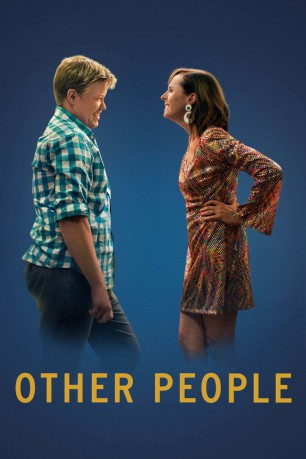
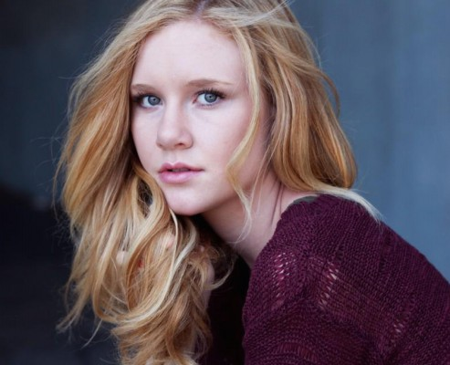
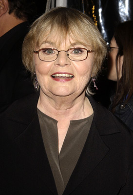
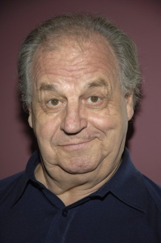
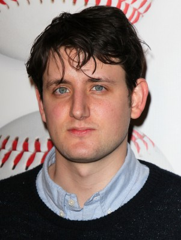
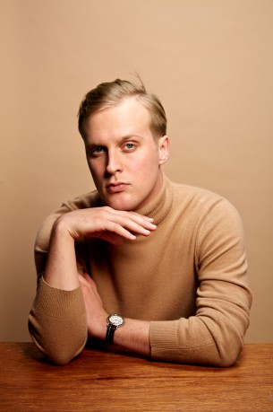
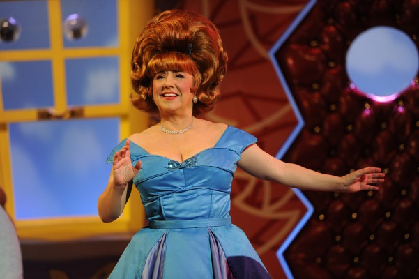
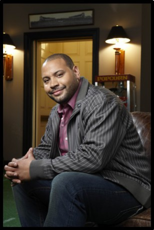
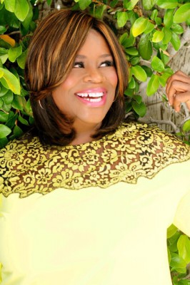

#5064 Other People
 
 IMDB-Wertung: 6.5 / 10
IMDB-Wertung: 6.5 / 10  Tomatometer: 86
Tomatometer: 86  Metascore: 0
Metascore: 0 
Der 29-jährige Comedy-Autor David hat sich gerade von seinem langjährigen Freund getrennt und zieht zurück in seine Heimat Sacramento, um sich um seine kranke Mutter Joanne zu kümmern. Diese hat einen bösartigen Tumor im fortgeschrittenem Stadium und nicht mehr lange zu leben. Als die Chemotherapie immer anstrengender wird, entschließt sie sich, diese abzubrechen. Doch auch Davids Beziehung zu dem Rest seiner Familie gestaltet sich schwieriger als gedacht. Besonders zu seinem Vater, der sich seit zehn Jahren weigert, die Homosexualität seines Sohnes zu akzeptieren.
Jahr: 2016
Dauer: 94 Minuten
FSK:
Land: USA Studio: Vertical EntertainmentTonspuren:
Untertitel:
Auflösung: 1080p (1920x1040) Größe: 4290 MB
Genre: Drama, Komödie
Regisseur: Chris Kelly
Drehbuch: Matt Ross
Soundtrack:
Darsteller:
- Jesse Plemons als David
 Molly Shannon als Joanne
Molly Shannon als Joanne Bradley Whitford als Norman
Bradley Whitford als Norman- Maude Apatow als Alexandra
-  Madisen Beaty als Rebeccah
- Deb Hiett als Cathy Columbo
-  June Squibb als Ruth-Anne
-  Paul Dooley als Ronnie
 Matt Walsh als Steve
Matt Walsh als Steve- Kerri Kenney als Aunt Lynne
- Paula Pell als Aunt Patti
- Kevin Dorff als Dennis
- Sophi Bairley als Caroline
-  Zach Woods als Paul
-  John Early als Gabe
- J.J. Totah als Justin
- Waymond Lee als Barfly
- Luke Sholl als Porn Employee
-  Lynne Marie Stewart als Livia
- Hilary Ward als Carla
- D'Arcy Carden als Jessica
-  Colton Dunn als Dan
- Drew Tarver als Craig
- Brandon Scott Jones als Andrew
- Nicole Byer als Charlie
- Alison Rich als Melanie
-  Retta als Nina
- Lateefah Holder als Sandi
- Lennon Parham als Vicki
- Rose Abdoo als Anne
- Kanoa Goo als Dave
- Jorge Diaz als Male Grocery Store Employee
- Carolyn Wilson als Female Grocery Store Employee
- Richard Jin als Josh
- Barry Wiggins als Pastor
- Devon Libran als Technician #2
- Isaac Alisma als Assistant Manager , uncredited
- Heidi Appe als Church Choir Singer , uncredited
- Reverend John Atom als Bar Patron / Dancer , uncredited
- Kyle Butenhoff als Church Patron , uncredited
- Camryn Cregger als School Kid-Grocery Store , uncredited
- Aaron David als Wine Bar Patron , uncredited
- Nik Dodani als Ron , uncredited
- Kennedy Hall als School Kid , uncredited
- Kye Haymon als Church Patron , uncredited
- James Hennessy als New Years Eve Party Guest , uncredited
- Brandon Higa als Jon , uncredited
- Stephanie Langnas als Wine Bar Patron , uncredited
- Suzanne Mayes als Church Choir Singer , uncredited
- Chinedu Oji als Church Patron , uncredited
Datei: X:\2016(N-Z)\Other People (2016, FSK, 1920x1040).mkv seit 22.12.2016
Festplatte: HD 2016(A-Z)
 Es gibt insgesamt 182 Filme in der Gruppe '2016(N-Z)'
Es gibt insgesamt 182 Filme in der Gruppe '2016(N-Z)'